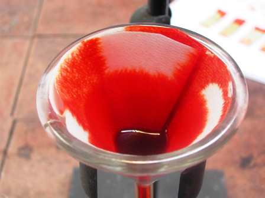
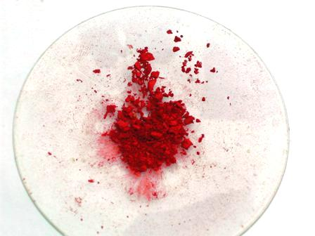

Prima del test per il potassio con la dipicrilammina, ho voluto vedere, per pura curiosità, il bel sale insolubile di questo metallo alcalino.
Ho sciolto pertanto un grammo di DPA con Na2CO3 ed ho aggiunto in quantità opportuna una soluzione concentrata di KCl, filtrando e lavando.


Il sale di K precipita L'enorme potere colorante
Il dipicrilamminato di potassio (il metallo sostituisce l'idrogeno sull'azoto) si presenta sotto forma di una polvere microcristallina di colore rosso vivace, appunto uno dei rari sali di potassio pochissimo solubili.

[Durante questi esperimenti fare tantissima attenzione alle mani! Ved. commento nel post precedente!]
L'esanitrodifenilammina forma sali insolubili e cristallini pure con parecchi altri metalli (Rb, Cs, Tl, Be, Zr, Pb, Hg), mentre forma precipitati amorfi con Al, Fe, Cr, Ni, Co, Cu, Bi, V, Ti, Th), ed ho fatto qualche prova estemporanea con qualcuno di essi senza qui renderne conto; anche perchè mi è oltremodo fastidioso aver a che fare con questa sostanza.
Ricordo anche che il sale di ammonio della DPA è stato usato un tempo come bel colorante per lana e seta, col nome di Auranzia, e devo dire che in quanto a potere colorante è veramente potente; tuttavia non poteva avere successo per le sue caratteristiche di tossicità e l'Auranzia fu presto sostituita, sicuramente senza alcun rimpianto.
(Non voglio nemmeno immaginare, per la mia ipersensibilità verso l'esanitrodifenilammina, di aver dovuto indossare in tempi autarchici un indumento colorato col "giallo auranzia...!!!).